侘びの極致を求めた茶聖 千 利 休
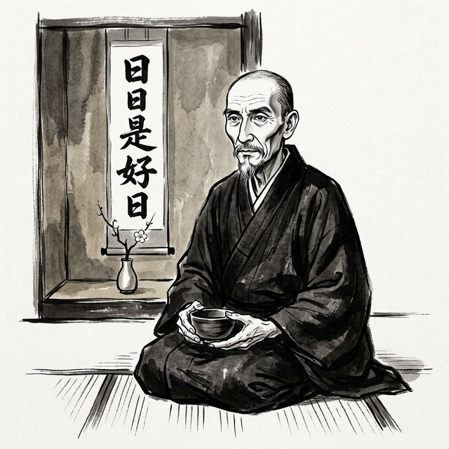
その生涯、思想、そして光と影
▼ 読み進める
茶聖への道
日本文化の深層に、一人の茶人がいる。千利休──。 その名は、茶の湯を芸術の域に高め、日本人の美意識そのものを変革した人物として、 四百年以上の時を超えて語り継がれている。
利休が追い求めた「侘び」の精神は、単なる茶の作法を超え、 建築、庭園、陶芸、花道、さらには日本人の生き方そのものに 深い影響を与え続けている。華美を排し、不完全の中に美を見出し、 一期一会の精神で人と向き合う──その哲学は、 現代においてもなお新鮮な輝きを放っている。
しかし、利休の生涯は光だけではなかった。 天下人・豊臣秀吉の側近として権勢を振るいながらも、 最期は切腹という悲劇的な結末を迎える。 その死の真相は今なお謎に包まれ、数多くの憶測と伝説が残されている。
本書は、千利休という稀代の文化人の全貌を、 その生い立ちから最期まで、思想、人となり、宗教観、世界観、 そして光と影の両面から描き出す試みである。 墨汁画の挿絵とともに、侘びの極致を求めた茶聖の物語を紐解いていこう。
生い立ち
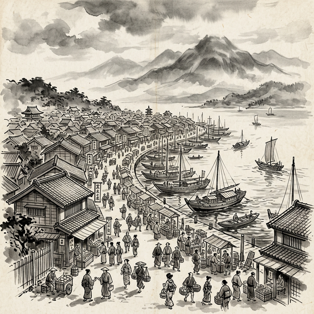
自由都市・堺の港景
大永二年（一五二二年）、和泉国・堺に一人の男児が産声を上げた。 田中与四郎──後の千利休である。父は田中与兵衛、 堺の豪商として名を馳せた魚問屋の当主であった。
堺は当時、日本有数の貿易港として栄え、 「東洋のヴェネツィア」とも称される自治都市であった。 南蛮貿易によって莫大な富が流入し、商人たちは経済力を背景に 独自の文化を花開かせていた。茶の湯もまた、 この豊かな都市文化の中で洗練されていった芸能のひとつであった。
少年期の修行
与四郎が茶の湯に触れたのは、わずか十七歳の頃であったとされる。 最初の師は北向道陳（きたむきどうちん）。 堺の有力な茶人であり、書院茶の伝統を受け継ぐ人物であった。 しかし与四郎の才能と探究心は、一人の師の教えに留まることを許さなかった。
やがて与四郎は、当時の茶の湯の第一人者・武野紹鷗（たけのじょうおう）に師事する。 紹鷗は、村田珠光が始めた「侘び茶」の精神をさらに深め、 茶の湯に新たな美意識を吹き込んだ革新者であった。 紹鷗のもとで、与四郎は侘び茶の真髄に触れ、 やがてその精神を極限まで推し進めることになる。
千家の成立
与四郎は後に「宗易（そうえき）」と号し、 さらに正親町天皇より「利休」の居士号を賜る。 「利休」の名は「利心、休せよ」── 鋭い心を休めよ、という禅の教えに由来するとされる。 千の姓は、祖父・千阿弥に由来する。
利休は宝心妙樹を娶り、堺に居を構えた。 長男・道安、養子の少庵をはじめとする子女に恵まれ、 後の三千家（表千家・裏千家・武者小路千家）の礎を築くことになる。 しかし、利休の真の「家」は茶室であり、 その狭い空間の中にこそ、彼の宇宙が広がっていた。
人となり
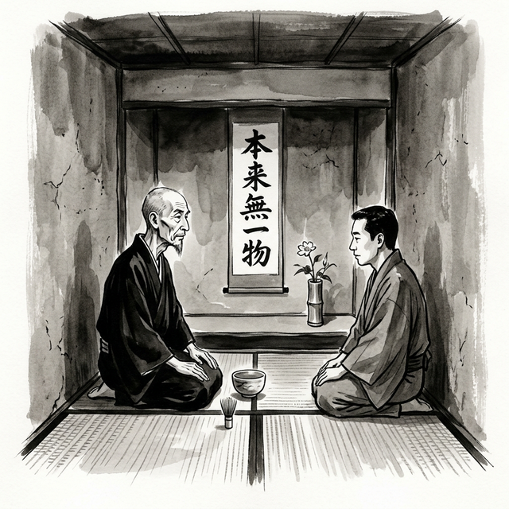
利休の茶事
利休の人物像を一言で表すならば、 「妥協なき美の求道者」であろう。 同時代の茶人・山上宗二は『山上宗二記』において、 利休を「名人にして、数寄の工夫比類なし」と評している。
厳格なる美意識
利休は、茶の湯のあらゆる要素に対して 一切の妥協を許さない人物であったという。 庭の露地の掃除ひとつにも、完璧を求めた。 有名な逸話として、利休が露地を掃き清めた後、 木を揺すって数枚の葉を散らしたという話がある。 完全に掃き清められた庭よりも、 自然の気配が残る庭にこそ真の美があると考えたのである。
もてなしの心
その厳格さの一方で、利休は深い思いやりの持ち主でもあった。 客を迎える際には、その人の心情、季節の移ろい、 天候に至るまで細やかに配慮し、 一服の茶に万感の想いを込めた。 「茶の湯とは、ただ湯を沸かし、茶を点てて飲むばかりなる事と知るべし」 という利休の言葉は、一見すると茶を簡素化しているようでありながら、 実はその「ただ」の中に無限の心配りが込められていることを示している。
決して揺るがぬ信念
利休は、権力者に対しても自らの美意識を曲げることはなかった。 織田信長、豊臣秀吉という天下人に仕えながらも、 茶の道においては一歩も退かなかった。 秀吉が黄金の茶室を造らせた際も、 利休は内心では侘びの精神とは相容れないものを感じていたとされる。 しかし利休は、黄金の茶室をも自らの美学の中に取り込み、 その空間に独自の緊張感を生み出したという。
利休の弟子たちへの教えは厳しくも温かいものであった。 「型」を徹底的に学ばせた上で、 最終的にはそれを超越することを求めた。 「規矩作法 守り尽くして 破るとも 離るるとても 本を忘るな」 ──この「守破離」の教えは、茶道のみならず、 日本文化のあらゆる道における修行の基本として今に伝わっている。
思想と美意識
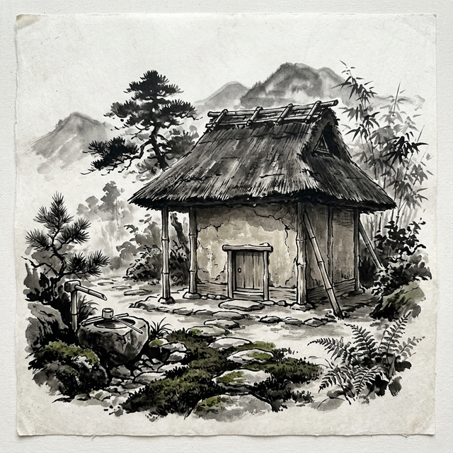
侘びの茶室 ─ にじり口と露地
利休の思想の核心は「侘び（わび）」にある。 しかし、侘びとは何か。この問いに対する答えは、 言葉で説明されるほどその本質から遠ざかるという、 禅の公案にも似た性質を持っている。
侘びの哲学
利休以前にも、村田珠光や武野紹鷗が侘び茶の道を切り拓いていた。 しかし利休は、その精神をかつてないほど深く、 かつ徹底的に追求した。利休にとって侘びとは、 単なる質素さや貧しさの美化ではなかった。 それは、あらゆる虚飾を剥ぎ取った先に現れる 本質的な美──存在そのものの輝きであった。
利休は茶室をわずか二畳にまで縮小した。 この極小の空間は、身分の差を超え、 主人と客が真に向き合うための装置であった。 にじり口（小さな入口）は、武士であっても刀を外し、 身をかがめて入ることを強いる。 茶室に入る者は、すべて平等であるという宣言であった。
一期一会
「一期一会」──利休の弟子・山上宗二が伝え、 後に井伊直弼が『茶湯一会集』で広めたこの言葉は、 利休の茶の精神を最も端的に表している。 今この瞬間の出会いは二度と繰り返されない。 だからこそ、一服の茶に全身全霊を込める。 この思想は、仏教の無常観と深く結びついている。
和敬清寂
利休が茶の湯の精神として掲げた「和敬清寂」は、 四つの漢字にその哲学のすべてを凝縮している。
利休七則
利休は茶の湯の心得を七つの教えにまとめたとされる。 「利休七則」と呼ばれるこの教えは、 一見すると当たり前のことしか言っていないように見える。 しかし、その「当たり前」を真に体現することの困難さこそが、 茶の道の深さを物語っている。
茶は服のよきように点て
炭は湯の沸くように置き
花は野にあるように
夏は涼しく冬暖かに
刻限は早めに
降らずとも雨の用意
相客に心せよ
第一則「茶は服のよきように点て」
一見するとこれほど単純な教えはない。 「飲みやすいようにお茶を点てなさい」──ただそれだけである。 しかし、この「よきように」という言葉の中には、 客の体調、気分、季節、時間帯、 前に食した料理との呼応まで含まれている。 濃すぎず薄すぎず、熱すぎず温すぎず、 その場にいる「この人」のための一碗を点てること。 万人に共通する正解はなく、 目の前の客を深く観察し、感じ取る力こそが求められる。
利休はある時、弟子が点てた茶を一口飲んで黙り込んだという。 弟子が不安になって「いかがでしょうか」と問うと、 利休は「お前は誰のために茶を点てたのか」と問い返した。 弟子は「利休様にお見せするために」と答えた。 利休は静かに首を振った。 「私に見せるためではない。 私に飲ませるために点てるのだ」。 技術の披露ではなく、相手への心遣い── それがこの第一則の真髄である。
第二則「炭は湯の沸くように置き」
炭の置き方一つにも宇宙がある。 茶の湯において、炭は美しい所作で並べられるが、 その本質は「湯が最適な温度で沸く」という 実用的な目的にある。 見た目が美しくても湯がぬるければ意味がなく、 火力が強すぎても湯が荒々しくなる。 形式と実用の完全な一致── これが利休の求めた境地であった。
ある弟子が炭手前を見事にこなした時、 利休は「炭の置き方は美しい。 だが湯がまだ沸いていない」と指摘した。 炭手前の形式的な美しさに気を取られ、 肝心の「湯を沸かす」という目的を忘れていたのである。 形式は目的に奉仕するものであり、 形式のための形式は虚礼に過ぎない── この教えは、茶の湯のみならず、 あらゆる仕事の本質を突いている。
第三則「花は野にあるように」
利休の花に対する美意識は、 生け花の常識を根底から覆すものであった。 華道では技巧を凝らして花を活けるが、 利休は「野に咲いているように」活けよと説いた。 一輪の花を竹の花入れに投げ入れるだけでよい。 自然のままの姿が最も美しい── この「脱技巧」の美学は、 禅の「無作の作法」にも通じている。
利休が朝顔の逸話で見せた美意識は、 この第三則の究極の実践であった。 庭一面の朝顔をすべて摘み取り、 一輪だけを床の間に活ける── 「野にあるように」とは、 自然の「多」を人工的に「一」に凝縮することで、 かえって自然の生命力を際立たせる 逆説的な営みなのである。
第四則「夏は涼しく冬暖かに」
これもまた、言葉にすれば当然のことである。 しかし利休がここで求めているのは、 単なる空調の話ではない。 夏の茶事では、打ち水で露地を濡らし、 簾を掛けて風を通し、 冷たい水で茶碗を清め、 涼やかな音を立てる水差しを用い、 青竹の蓋置で目にも涼を演出する。 五感のすべてに「涼」を行き渡らせることで、 客は暑さを忘れて心地よくなる。
冬の茶事もまた然りで、 炭を多めに入れて温かみを増し、 温もりのある楽茶碗を用い、 暖色の掛物を選ぶ。 季節との対話、自然への繊細な応答── これは現代でいう「おもてなし」の原点であり、 相手の心身に寄り添う想像力の教えである。
第五則「刻限は早めに」
「時間に余裕を持ちなさい」という教えである。 しかし利休がここで説いているのは、 単なる「時間厳守」ではない。 余裕を持つことで心に「間（ま）」が生まれ、 その「間」の中にこそ気づきや発見がある。 慌ただしく準備したのでは、 風の音にも、光の移ろいにも気づけない。
利休は茶事の数時間前から茶室に入り、 ひとり静かに座って空間の気配を感じ取ったという。 準備は単なる段取りではなく、 精神を研ぎ澄ます修行の時間であった。 現代人が常に「忙しさ」に追われる中で、 この教えは、立ち止まり、 呼吸を整えることの大切さを説いている。
第六則「降らずとも雨の用意」
「たとえ晴れていても雨の準備をしなさい」── これは心構えの教えである。 何事にも備えを怠らず、 予想外の事態にも動じない心を養えということ。 茶事においては、急な雨に備えて 露地に雨具を用意し、 道が濡れても客が不快にならないよう配慮する。
しかしこの教えには、もう一層深い意味がある。 「雨」とは人生における不測の事態の暗喩でもある。 病、別離、死── いつ降り出すかわからない人生の「雨」に対して、 常に心の準備をしておくこと。 一期一会の精神と表裏をなすこの教えは、 戦国の世を生きた利休ならではの、 生と死に向き合う覚悟の表明でもあった。
第七則「相客に心せよ」
「一緒に茶事に招く客の組み合わせに気を配りなさい」 という教えである。 茶事は主人と客の関係だけでなく、 客同士の関係も重要である。 気の合わない者同士を同席させれば、 どれほど茶が見事でも場の調和は崩れる。 逆に、互いを高め合える者同士の出会いは、 一碗の茶に更なる深みを与える。
この教えは、利休がいかに人間関係の機微に 敏感であったかを示している。 茶の湯は孤独な修行ではなく、 「場」を共有する人々の関係性を含めた 総合的な芸術である。 現代の会食やパーティーにおける「席順」の配慮も、 この利休の教えの延長線上にあると言えよう。
弟子との問答 ─ 「当たり前」の深淵
弟子がこの七則を聞いて 「それくらいのことは知っています」と言ったところ、 利休は「それができれば、私があなたの弟子になりましょう」 と答えたという。 この有名な問答は、利休七則の本質を見事に照らし出している。
「知っている」ことと「できる」ことの間には、 深い溝がある。さらに「できる」ことと 「自然にそうしている」こととの間にも、 もう一段の溝がある。 利休が求めたのは、七則を「意識してやる」段階ではなく、 呼吸するように自然に体現する境地であった。 これは禅における「修行の三段階」── 山を見て山だと思う段階、 山を見て山ではないと思う段階、 そして再び山を見て山だと悟る段階── にも通じる深遠な教えである。
利休七則の謎 ─ 本当に利休の教えか
ここで、利休七則にまつわる大きな謎に触れなければならない。 実は、利休七則が利休自身の言葉であるという 確実な史料は存在しないのである。
利休七則の出典とされるのは『南方録（なんぽうろく）』である。 これは利休の弟子・南坊宗啓が記したとされる茶書で、 利休の教えを直接記録した最も重要な文献とされてきた。 しかし、『南方録』は元禄三年（一六九〇年）に 立花実山（たちばなじつざん）が「発見した」とされるもので、 利休の死から実に百年後のことである。
さらに、南坊宗啓という人物自体の実在すら 確認できていない。 茶道史研究者の間では、『南方録』は 立花実山自身による創作、あるいは 複数の口伝を実山が編纂・脚色したものではないか という説が有力である。 つまり、利休七則は利休の教えの「精神」を 後世が凝縮したものであって、 利休が実際にこの七つの言葉を 明確に述べたかどうかは定かではないのである。
しかし、ここに逆説的な真実がある。 利休七則が仮に後世の創作であったとしても、 その教えは利休の茶の湯の精神を 恐るべき正確さで捉えている。 利休の所作、逸話、弟子たちの証言── あらゆる史料が指し示す利休像と、 七則が描き出す茶聖の姿は 寸分のずれもなく一致するのである。 言葉の真偽はともかく、 精神の真実として、利休七則は 四百年以上にわたって茶の道を照らし続けている。
利休七則は、利休の「言葉」ではないかもしれない。
しかしそれは、利休の「生き方」そのものである。
影響を受けた人物と事象
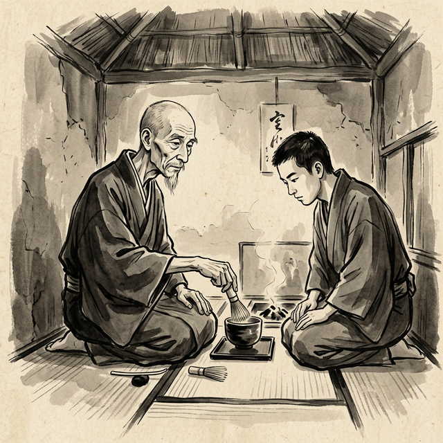
師と弟子 ─ 茶の道の継承
千利休の思想と美意識は、 決して彼一人の独創によって生まれたものではない。 先人たちの叡智の蓄積と、時代の大きなうねりの中で 醸成されていったものである。
村田珠光 ─ 侘び茶の祖
村田珠光（むらたじゅこう、一四二三～一五〇二）は、 「侘び茶」の創始者とされる人物である。 珠光は、当時の豪華絢爛な書院茶に異を唱え、 質素な道具と小さな空間での茶の湯を提唱した。 一休宗純に参禅した珠光は、禅の精神を茶の湯に融合させ、 「茶禅一味」の思想を確立した。 利休の侘び茶の精神は、この珠光に端を発する。
武野紹鷗 ─ 直接の師
武野紹鷗（たけのじょうおう、一五〇二～一五五五）は、 珠光の後継者であり、利休の直接の師である。 紹鷗は連歌師としても知られ、藤原定家の歌論に深く傾倒していた。 「見渡せば花も紅葉もなかりけり浦の苫屋の秋の夕暮」 ──定家のこの歌に、紹鷗は侘びの本質を見出した。 華やかさが去った後に残る寂寥の美、 それこそが侘びであると紹鷗は教え、利休はその教えを自らの血肉とした。
北向道陳 ─ 最初の師
北向道陳（きたむきどうちん）は、 利休が最初に茶の湯を学んだ師である。 道陳は書院茶の伝統を守りつつも、 新しい茶の湯の可能性を探究する人物であった。 道陳のもとで利休は茶の湯の基本を身につけ、 後に紹鷗のもとでさらに深い侘び茶の世界へと踏み入ることになる。
一休宗純と禅の影響
利休自身は一休宗純（一三九四～一四八一）に直接師事してはいないが、 珠光を通じて一休の禅の精神を間接的に受け継いでいる。 また利休は、大徳寺の高僧たちとの交流を通じて 禅の感化を深く受けた。特に古渓宗陳との関係は深く、 利休の宗教的思想の形成に大きな影響を与えている。
堺という土壌
人物のみならず、利休が生まれ育った堺の都市文化も 彼に決定的な影響を与えた。自治都市として発展した堺は、 封建的な身分秩序から相対的に自由な空間であった。 商人たちの合議による自治は、利休の「茶室の平等」 という思想の土壌となったと考えられる。 また、南蛮貿易を通じて流入した異文化の刺激は、 利休の広い視野と柔軟な創造性を育んだ。
戦国の世
利休が生きた戦国時代は、 明日をも知れぬ生死の境に常に身を置く厳しい時代であった。 この時代の空気こそが、「一期一会」の精神を生み出した。 生と死が隣り合わせの世にあって、 一服の茶に込められる想いは、 太平の世では決して到達し得ない深みに達していたのである。
禅と臨済宗の教え
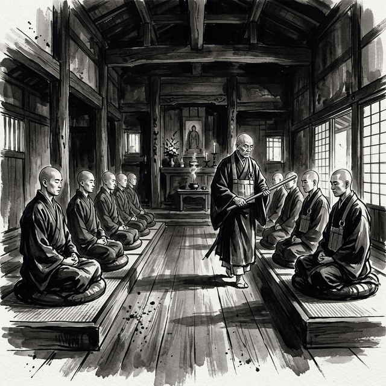
臨済禅の修行 ─ 禅堂の坐禅
利休の茶の湯を真に理解するためには、 その精神的基盤である禅仏教、とりわけ臨済宗の教えを 深く知る必要がある。利休の美意識、所作、思想のすべてに、 臨済禅の精神が染み渡っている。
臨済義玄 ─ 「喝」の禅
臨済宗の開祖・臨済義玄（？～八六七）は、 師の黄檗希運のもとで三度問答を仕掛け、 三度殴られるという壮絶な修行を経て悟りに至った。 臨済の禅は「活人剣」とも呼ばれ、 弟子の迷いを鋭い「喝」の一声で断ち切る苛烈さを持つ。 「仏に逢うては仏を殺し、祖に逢うては祖を殺せ」 ──この過激な言葉は、あらゆる権威や既成概念への執着を捨て、 自らの本来の面目（真の自己）に目覚めよという教えである。
利休が茶の湯において唐物崇拝を打ち破り、 独自の「侘び」の美を確立したことは、 まさに臨済の「殺仏殺祖」の精神の体現であった。 師の教えすら超越し、自らの境地を切り拓く── 利休の革新性の根底には、臨済禅の激しい精神が脈打っている。
公案 ─ 論理を超える問い
臨済宗の修行で最も特徴的なのが「公案」である。 「隻手の声を聞け」「犬に仏性はあるか」 ──これらの公案は、論理的思考では絶対に解けない。 修行者は公案を抱えて坐禅し、 思考の壁を突き破る瞬間（見性）を待つ。
利休の茶の湯にも、公案的な構造が随所に見られる。 「茶の湯とは、ただ湯を沸かし茶を点てて飲むばかりなる事」 ──この言葉自体が一つの公案である。 「ただそれだけ」であるはずのことが、 なぜ生涯をかけて追求するに値するのか。 この矛盾を論理ではなく実践で体得することこそが、 茶の道の本質である。利休七則もまた然り。 「当たり前のこと」を完全に実践できれば悟りに至る── これは公案の構造そのものである。
看話禅と黙照禅 ─ 臨済と曹洞の分岐
禅宗には大きく分けて臨済宗の「看話禅」と 曹洞宗の「黙照禅」がある。 曹洞宗の黙照禅が「只管打坐」（ただ坐る）として 静かな坐禅に徹するのに対し、 臨済宗の看話禅は公案を用いて積極的に悟りを追求する。 師と弟子の激しい問答（禅問答）を通じて、 言葉と論理の限界を突破するのである。
利休の茶の湯が臨済禅に基づくことの意味は深い。 利休の茶は決して「ただ静かに座る」だけのものではなかった。 一服の茶を点てるという行為の中に、 主客の間の緊張感のある対峙があり、 言葉を超えた心の交流がある。 それは禅問答と同じ構造を持つ、 動的で能動的な精神の営みであった。
一休宗純 ─ 型破りの覚者
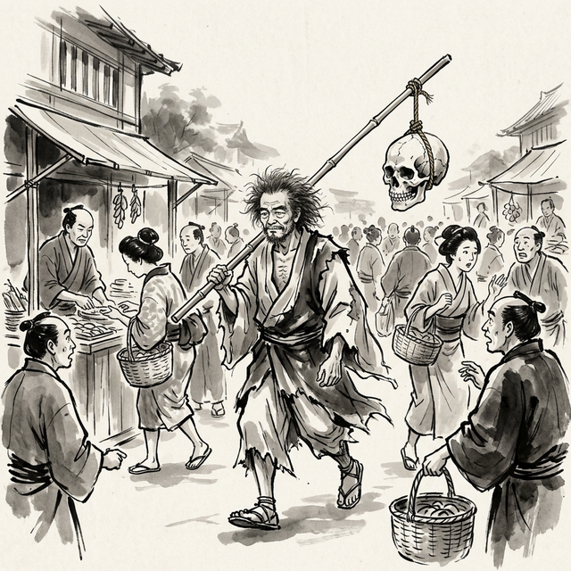
一休宗純 ─ 風狂の禅師
利休の精神的血脈を語る上で欠かせないのが、 一休宗純（一三九四～一四八一）の存在である。 一休は後小松天皇の落胤とされ、 大徳寺の住持にまでなりながら、 世俗の権威や形式化した禅の堕落を痛烈に批判した。 酒を飲み、女性を愛し、正月に杖の先に髑髏を掲げて 「ご用心、ご用心」と町を歩いた── その「風狂」の行いは、形式に囚われた仏教界への 鮮烈な抗議であった。
一休の「風狂」の精神は、村田珠光を通じて利休に受け継がれた。 珠光は一休に参禅し、「仏法は茶の湯の中にあり」という 確信を得たとされる。日常の所作の中にこそ悟りがある── この一休の教えは、利休の茶の湯の根本思想となった。 高貴でも卑俗でもなく、ただ真実であること。 一休の反骨精神は、権力者にも自らの美意識を曲げなかった 利休の姿勢にも通じている。
「本来無一物」─ 禅が利休に与えたもの
六祖慧能の「本来無一物」（もともと何ものも存在しない） という偈は、利休の侘びの美学の哲学的根拠を成している。 すべては空である。しかし、その空の中にこそ 万物が生き生きと立ち現れる。 利休が茶室から装飾を削ぎ落としていったのは、 この「空」の中に真の充実を見出すためであった。
禅は利休に、形式を超える勇気を与え、 権威に拠らない美の基準を与え、 そして最終的には、死すらも超越する精神の力を与えた。 利休の辞世「人生七十 力囲希咄」は、 まさに臨済の「喝」の精神で死と向き合った 一人の禅者の最後の叫びであった。
宗教観
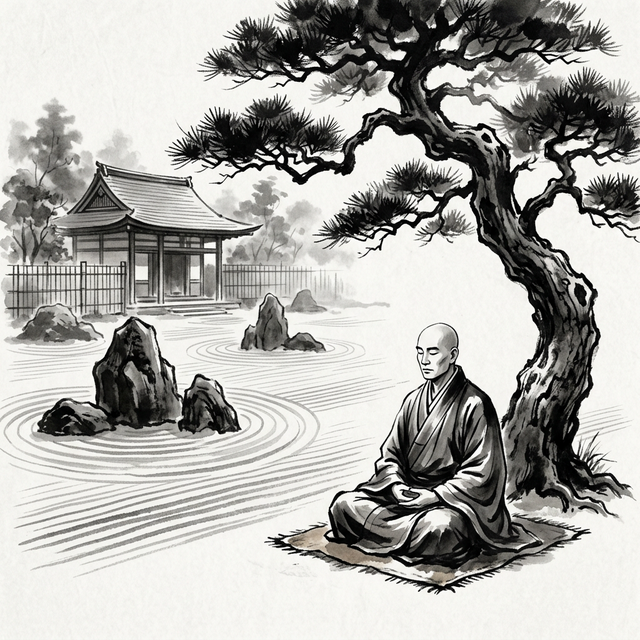
禅定 ─ 松下の瞑想
利休の茶の湯を理解する上で、 禅仏教との関係を避けて通ることはできない。 「茶禅一味」──茶と禅は一つである── という言葉は、利休の茶の湯の根底に流れる宗教的精神を端的に表している。
大徳寺との深い縁
利休は臨済宗大徳寺派と極めて深い関係を持っていた。 大徳寺は、一休宗純、村田珠光以来、 茶の湯との関わりが深い禅刹であった。 利休自身も大徳寺で参禅し、 笑嶺宗訢（しょうれいそうきん）に師事した。 また、古渓宗陳とは特に親しく交わり、 その思想的影響は計り知れないものがあった。
利休の居士号「利休」そのものが、 大徳寺の高僧によって与えられたものとされる。 「名利を休す」「利心を休す」など諸説あるが、 いずれにしても禅的な含意を持つ号であることは間違いない。
茶禅一味の実践
利休にとって、茶を点てることは一種の修行であった。 茶室という密閉された空間は、そのまま修行の場（道場）であり、 一服の茶を点てる所作の一つ一つが、 禅における行住坐臥（ぎょうじゅうざが）の実践であった。
禅の「直指人心（じきしにんしん）」 ──言葉や理屈を超えて、直接心の本質に至る── という教えは、利休の「茶は服のよきように点て」 という簡素な教えにそのまま通じている。 形式や理論ではなく、実践そのものの中に悟りがある。 利休の茶の湯は、まさにこの禅の精神の体現であった。
無の美学
禅における「空（くう）」「無（む）」の思想は、 利休の美意識と深く共鳴する。 華美な装飾を取り去り、空白を残し、 不完全を許容する── 利休の侘びの美学は、禅の「無」の思想の 美的表現であると言えよう。
茶室の床の間に掛けられる掛軸（掛物）を、 利休は茶道具の中で最も大切なものとした。 そこには多くの場合、禅語が書かれていた。 「日日是好日」「喫茶去」「本来無一物」── これらの禅語は、茶室の空間に精神的な深みを与え、 客の心を日常から非日常の境地へと誘う装置であった。
死生観
利休の宗教観は、その死生観にも色濃く反映されている。 切腹を言い渡された際、利休は泰然として死を受け入れたとされる。 辞世の句「人生七十 力囲希咄 吾這寶剣 祖佛共殺 堤る我得具足の一太刀 今此時ぞ天に抛」は、 生死を超越した禅者の境地を示すものとして知られる。 利休にとって、死もまた一期一会の営みであったのかもしれない。
大徳寺と激動の時代
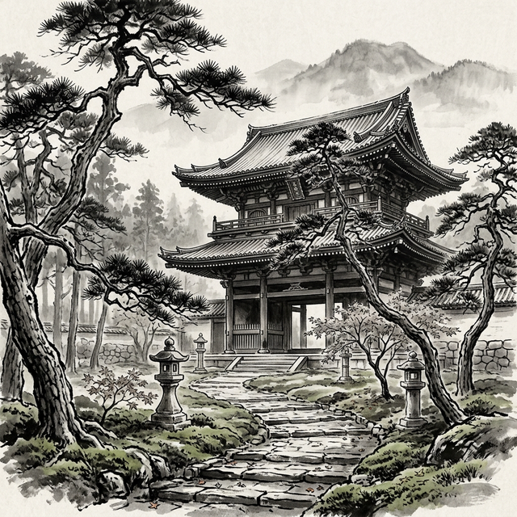
大徳寺山門（金毛閣） ─ 利休の運命を変えた門
大徳寺は、利休の精神世界を形作った 最も重要な場所のひとつである。 京都紫野に佇むこの名刹は、 臨済宗の中でも独自の気風を持ち、 権力に阿らぬ清廉さと、茶の湯文化との深い結びつきで 他に類を見ない存在であった。
大徳寺の成り立ちと気骨
大徳寺は正和四年（一三一五年）、 宗峰妙超（大燈国師）によって開創された。 宗峰妙超は、自堕落な生活を送りながらも 鋭い禅機を持つ型破りの禅僧であり、 その精神は後の大徳寺の気風を決定づけた。 後醍醐天皇の帰依を受けて隆盛を誇ったが、 室町幕府の五山十刹制度からは距離を置き、 「林下（りんか）」と呼ばれる在野の立場を貫いた。
この「権力からの独立」という大徳寺の伝統は、 利休の精神に深く響いたはずである。 五山の寺院が幕府の庇護と統制のもとに置かれる中、 大徳寺は自らの禅風を守り続けた。 この気骨は、天下人に仕えながらも 自らの美意識を決して曲げなかった利休の姿勢と 見事に重なり合う。
応仁の乱と復興 ─ 一休の功績
応仁の乱（一四六七～一四七七）は京都を焼け野原に変え、 大徳寺もまた甚大な被害を受けた。 この荒廃した大徳寺を復興させたのが、 第四十七代住持となった一休宗純である。 一休は堺の豪商たちの経済的支援を受けて 大徳寺の再建を進めた。この時の堺商人と大徳寺の結びつきが、 後の茶の湯文化と大徳寺の深い関係の原点となる。
一休の弟子・村田珠光が侘び茶を始め、 その流れが武野紹鷗を経て利休に至る── この茶の湯の系譜は、そのまま大徳寺の精神的系譜でもあった。 利休が大徳寺に深く帰依したのは、 単なる個人的信仰を超えた、文化的・精神的な必然であった。
戦国の激流の中で
利休が活躍した十六世紀後半は、 日本史上最も激しい変革の時代であった。 応仁の乱後の下克上の風潮は、 旧来の権威と秩序を根底から覆した。 織田信長は仏教勢力すら武力で屈服させ、 比叡山を焼き討ちし、一向一揆を殲滅した。 しかし大徳寺は、この嵐の中にあっても 独自の立場を維持し続けた。
茶の湯はこの激動の時代にあって、 独特の政治的機能を担うようになる。 信長は「名物狩り」と呼ばれる茶道具の収集を行い、 家臣への褒賞として茶会の開催権を与えた。 茶の湯は権力の象徴となり、外交の場となった。 利休はこの政治と文化が渾然一体となった世界の中心で、 両方の世界を自在に往来する稀有な存在であった。
利休と大徳寺の高僧たち
利休は大徳寺の複数の高僧と深い交流を持った。 笑嶺宗訢には参禅して禅の薫陶を受け、 古渓宗陳とは特に親密な関係を築いた。 古渓は利休の禅の師であると同時に、 文化的な同志でもあった。 利休が大徳寺の山門（金毛閣）の修復に私財を投じ、 後にそれが切腹の口実とされる悲劇は、 利休と大徳寺の関係の深さ── そして政治権力との緊張関係を象徴する出来事であった。
大徳寺は利休にとって、単なる信仰の対象ではなかった。 それは精神の故郷であり、自らの美意識の根源であり、 そして最終的には、命を賭してでも守るべき絆であった。 利休の死後も、大徳寺には利休ゆかりの茶室や庭園が残され、 今なお茶の湯の聖地として人々の巡礼を受け続けている。
世界観
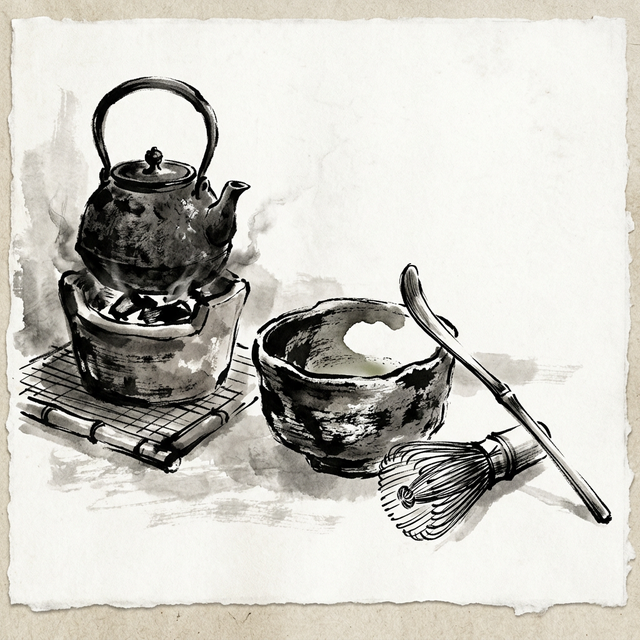
侘びの器 ─ 楽茶碗と茶道具
利休の世界観は、 茶室という極小の空間に宇宙を凝縮するものであった。 二畳の茶室は、利休にとって小宇宙そのものであり、 そこで交わされる一期一会の出会いには、 人間存在の本質が映し出されていた。
小さきものの中の宇宙
利休は茶室を極限まで小さくすることで、 逆説的に無限の広がりを表現しようとした。 二畳の空間に主客が向かい合う時、 そこには外界の一切が排除され、 純粋な人と人との出会いだけが存在する。 この凝縮された空間にこそ、 利休は世界の本質を見出していた。
露地（茶室に至る庭の小道）は、 俗世から聖なる空間への移行を象徴する。 利休は露地を「市中の山居」と呼んだ。 都市の喧騒の中にありながら、 一歩足を踏み入れれば山中の庵にいるような 静寂と清浄が広がる。 この「日常の中の非日常」という二重構造こそが、 利休の世界観の核心であった。
自然との一体
「花は野にあるように」── 利休七則のこの一節は、彼の自然観を端的に表している。 利休は、自然を征服したり支配したりするのではなく、 自然のあるがままの姿に寄り添おうとした。 茶花は活けすぎず、花瓶に一輪を投げ入れるだけでよい。 野に咲く花のように、あるがままに。
季節の移ろいに対する鋭敏な感受性もまた、 利休の世界観の重要な要素であった。 茶事のすべて──道具の選択、掛物、花、菓子、食事──は 季節と呼応するように構成される。 利休の茶事に参加することは、 自然の巡りそのものを体験することでもあった。
美の民主化
利休の世界観において最も革命的だったのは、 美の価値基準の転換であろう。 それまで茶の湯で珍重されていたのは、 中国から渡来した高価な唐物（からもの）であった。 利休はこれに対し、日本の素朴な焼き物や、 日用の雑器にさえ美を見出した。
楽茶碗の創始は、その象徴的な出来事である。 利休は瓦職人の長次郎に依頼し、 ろくろを使わず手びねりで作る素朴な茶碗── 楽茶碗を生み出させた。 この歪んだ、完璧からは程遠い茶碗こそが、 利休にとっての最高の器であった。 不完全の中にこそ完全がある── この逆説は、利休の世界観の根幹をなしている。
政治と美の狭間で
利休の世界観は、純粋に美的・精神的なものに留まらず、 政治的な次元をも内包していた。 茶の湯は戦国時代において、 外交の場であり、権力の誇示の手段であり、 同時に精神的な癒やしの場でもあった。 利休はこの多層的な茶の湯の世界を、 自在に操る希有な才能の持ち主であった。 しかし、その才能が最終的に彼自身を滅ぼすことになるとは、 利休もまた予想し得なかったのかもしれない。
国際都市・堺とキリスト教の波
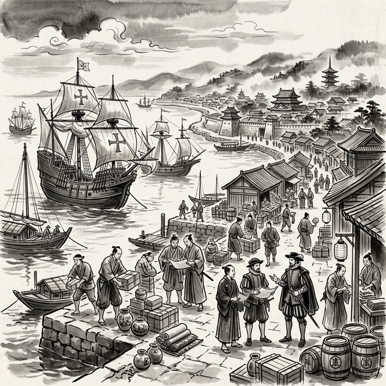
堺港の南蛮船 ─ 東西文明の交差点
堺──この都市の名を語らずして、 利休の精神世界を理解することはできない。 十六世紀の堺は、単なる貿易港ではなかった。 それは東アジア有数の国際都市であり、 自治と自由の精神が息づく「日本のヴェネツィア」であり、 そしてキリスト教という西方の宗教が 最初に根を下ろした土地のひとつでもあった。
自由都市・堺の特異性
堺は戦国時代において極めて特異な都市であった。 会合衆（えごうしゅう）と呼ばれる有力商人たちによる 合議制で運営され、周囲に堀を巡らせて 武力勢力の干渉を排除していた。 宣教師ガスパル・ヴィレラは一五六一年の書簡で、 堺を「日本のヴェネツィア」と呼び、 その自治の見事さと商業の繁栄を驚嘆をもって報告している。
この自治都市の空気は、利休の思想形成に決定的な影響を与えた。 封建的な身分秩序とは異なる、 商人たちの対等な関係に基づく堺の文化は、 茶室における「にじり口の平等」── 武士も町人もひとしく身をかがめて入る── という利休の革命的な思想の土壌となった。
南蛮貿易と文化の衝撃
天文十二年（一五四三年）の鉄砲伝来、 そして天文十八年（一五四九年）のフランシスコ・ザビエルの来日は、 日本に巨大な文化的衝撃をもたらした。 堺はポルトガル商人との南蛮貿易の中心地として、 この衝撃を最も直接的に受けた都市であった。
堺には南蛮渡来の珍品が続々と流入した。 ガラス器、時計、地球儀、望遠鏡、 そして西洋の絵画や音楽。 利休が少年期から青年期にかけて暮らした堺は、 まさに異文化との出会いの最前線であった。 この経験が、利休に一つの文化に閉じこもらない 広い視野と柔軟な感性を与えたことは想像に難くない。
イエズス会と堺の交わり
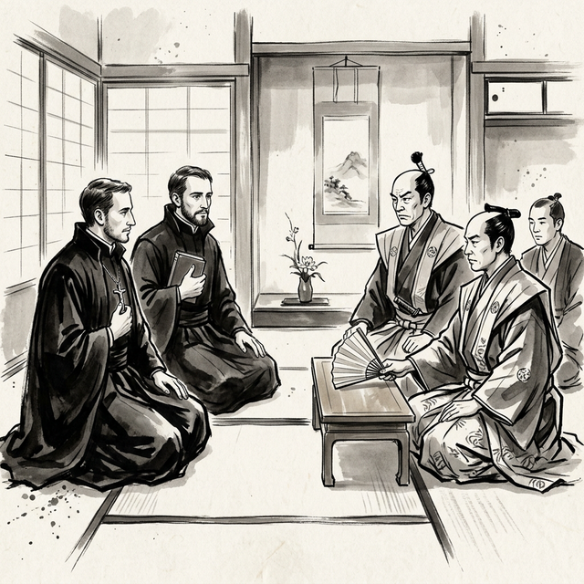
宣教師と日本人 ─ 東西の邂逅
ザビエルは堺にも立ち寄り、布教活動を試みた。 その後もイエズス会の宣教師たちは堺を重要な拠点と位置づけ、 ルイス・フロイス、オルガンティーノ、 ガスパル・ヴィレラらが活発に活動した。 彼らは堺の知識人や商人たちと交流し、 キリスト教の教理だけでなく、 西洋の科学、医学、天文学の知識をも伝えた。
フロイスの『日本史』には、堺の茶人たちについての 興味深い記述が散見される。 彼らは茶の湯の精神と比較しながら、 日本人の精神世界を理解しようとした。 堺の商人たちもまた、キリスト教の教えに 知的な関心を寄せる者が少なくなかった。 自由な気風の都市だからこそ、 異なる宗教にも開かれた姿勢が可能だったのである。
布教の裏の思惑 ─ 植民地化戦略
しかし、キリスト教の布教活動には、 純粋な宗教的情熱だけでは説明できない もうひとつの側面があった。 十六世紀のカトリック教会とイベリア半島の国々 ──ポルトガル・スペイン──は、 布教と征服を表裏一体のものとして推進していた。 教皇アレクサンデル六世が一四九三年に発布した 教皇子午線（デマルカシオン）は、 非キリスト教世界を二国で「分割」する取り決めであり、 布教はそのまま領土拡大の尖兵であった。
イエズス会の宣教師たちは、 日本の政治情勢を詳細に本国に報告していた。 フロイスの『日本史』は布教記録であると同時に、 精緻な軍事・政治情報の報告書でもあった。 宣教師たちは各地の大名の勢力関係を分析し、 キリシタン大名を通じて政治的影響力を拡大することを 戦略的に進めていた。 フィリピンがスペインの植民地となったのは まさに同時代の一五六五年のことであり、 日本がその次の標的であった可能性は 決して荒唐無稽な話ではなかった。
ヴァリニャーノ（巡察使）は日本の武力征服は 困難であると報告する一方で、 キリシタン大名のネットワークを通じた 間接的な支配の可能性を模索していた。 長崎がイエズス会の領地として 事実上の治外法権を享受していた事実は、 布教活動が単なる宗教的営為を超えた 政治的・領土的野心を内包していたことを 如実に物語っている。
日本人奴隷貿易の闇
キリスト教の布教と南蛮貿易がもたらした 最も暗い側面のひとつが、日本人の奴隷貿易である。 ポルトガル商人たちは、戦国の混乱に乗じて 日本人──とりわけ女性と子供──を購入し、 ゴア、マカオ、東南アジア、さらにはヨーロッパにまで 「奴隷」として連れ去っていた。
この実態は複数の史料によって裏付けられている。 天正十五年（一五八七年）、秀吉が九州を平定した際、 彼は現地でこの惨状を目の当たりにした。 秀吉はイエズス会の副管区長コエリョに対し、 激しい怒りをもってこう問いただしたと伝えられる── 「なぜポルトガル人は日本人を買い取り、 奴隷として海外に連れ出すのか」と。
宣教師ルイス・フロイス自身も、 ポルトガル商人による日本人奴隷売買について 書簡の中で言及している。 一五七〇年のポルトガル国王セバスティアン一世による 日本人奴隷売買禁止令は、 この問題がいかに深刻であったかを示す証拠である。 しかし、禁止令にもかかわらず、 奴隷貿易は事実上継続されていた。 戦国時代の混乱の中で、 誘拐や人身売買によって海外に送られた 日本人の数は、数万人に及ぶとする推計もある。
バテレン追放令の真実
天正十五年六月十九日（一五八七年七月二十四日）、 秀吉は九州平定の直後に「バテレン追放令」を発令した。 従来の歴史学では、この追放令は秀吉の 政治的な権力志向や感情的な反発によるものと 解釈されることが多かった。 しかし、追放令の条文を子細に読むと、 秀吉の怒りの核心には、 日本人の奴隷売買という人道的問題があったことが浮かび上がる。
追放令の第十条には、 「日本人を南蛮に売り遣わす事、曲事（不正）たるべき事」 と明記されている。秀吉は、 キリスト教の布教と奴隷貿易が密接に結びついている現実、 そしてキリシタン大名が領民を改宗させた上で 「売り渡している」という疑惑に、 天下人として許容できない怒りを覚えたのである。
さらに秀吉は、仏教寺院の破壊、 神社の焼き打ちといったキリシタンの排他的行動にも 強い懸念を抱いていた。 また、長崎がイエズス会の事実上の領地となり、 日本の主権が侵害されている状況は、 天下統一を果たした秀吉にとって 看過できない問題であった。 バテレン追放令は、単なる宗教弾圧ではなく、 日本の主権と人民の尊厳を守るための 政治的決断であったと見ることもできるのである。
キリシタン大名と利休の弟子たち
利休の弟子の中に、キリシタン大名が 複数含まれていたことは極めて重要な事実である。 「利休七哲」に数えられる高山右近（ジュスト高山）は、 最も有名なキリシタン大名のひとりであり、 筋金入りのカトリック信者であった。 蒲生氏郷（洗礼名レオン）もまたキリシタンであり、 牧村利貞もキリスト教の影響を受けていたとされる。
利休がこれらのキリシタン大名を弟子として迎え入れ、 深い師弟関係を結んでいたという事実は、 利休自身がキリスト教に対して少なくとも排他的ではなく、 むしろ積極的な関心を持っていた可能性を示唆する。 特に高山右近との関係は深く、 右近の信仰と利休の侘びの精神が、 茶室の中でどのような対話を生んでいたのか── それは歴史の空白に包まれた、 最も魅力的な問いのひとつである。
利休とキリスト教 ─ 茶聖の隠された本質
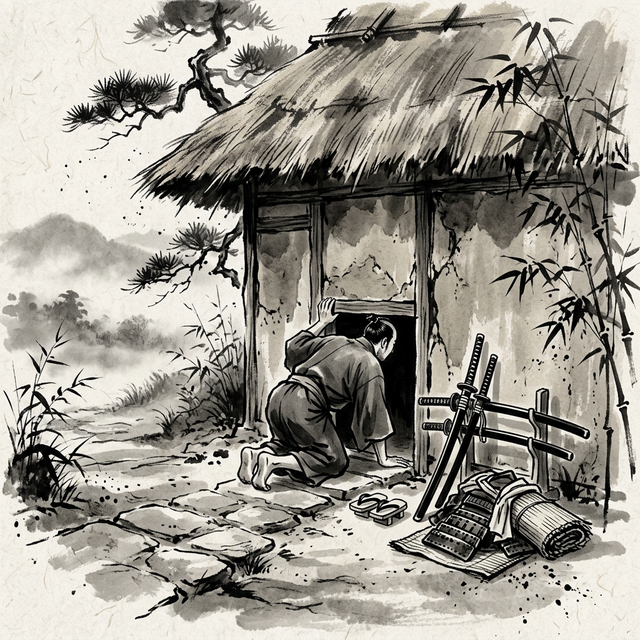
にじり口 ─ 武士も身をかがめる平等の入口
千利休はキリシタンであったのか──。 この問いは、茶道史研究において 長年にわたって論争の的となってきた。 直接的な証拠は存在しない。しかし、利休の茶の湯には、 禅の影響だけでは説明しきれない要素が 確かに存在するのである。
にじり口の謎 ─ 平等思想の源泉
利休が考案したとされる「にじり口」は、 茶の湯革命の象徴として知られる。 高さ約六十六センチ、幅約六十三センチの小さな入口。 武士は刀を外さなければ入れず、 大名であっても膝をつき、頭を下げて入らなければならない。 この「茶室ではすべての人が平等」という思想は、 禅仏教にはない発想である。
禅の教えでは「仏性はすべてに宿る」とされるが、 それは現世の社会的平等を積極的に主張するものではない。 一方、キリスト教は「神の前の平等」を明確に説く。 身分や貧富の差なく、すべての人は神の前で等しい── この思想は、にじり口の設計思想と驚くほど親和性が高い。 堺でキリスト教に触れた利休が、 この平等の思想に何らかの影響を受けた可能性は 決して否定できないのである。
茶室と聖堂 ─ 聖なる空間の共鳴
利休の茶室と中世ヨーロッパの聖堂には、 興味深い構造的類似が指摘されている。 露地（茶室に至る庭の小道）は、 俗世から聖なる空間への移行を象徴する。 これは教会の参道やナルテックス（前廊）の機能と 本質的に同じである。 蹲踞（つくばい）での手水は 教会の聖水盤を思わせ、 茶室の入口で身を低くする行為は、 教会への入堂における跪きの所作と重なる。
さらに、茶事における「主人が客に仕える」という構造は、 キリスト教における「最後の晩餐」── キリストが弟子たちの足を洗い、パンとぶどう酒を分かつ── という聖餐式の構造と、本質的な類似性を持つ。 一碗の茶を分かち合う行為に、 利休が聖体拝領の精神的構造を見出していたとすれば、 それは茶の湯の意味を根本から問い直すことになる。
高山右近 ─ 信仰と茶の湯の架け橋
利休とキリスト教の関係を考える上で、 最も重要な人物が高山右近（一五五二～一六一五）である。 右近は利休七哲のひとりであり、 同時にキリスト教信仰のために 領地も名誉もすべてを捨てた「殉教者」でもあった。 右近は利休の茶の湯に深く傾倒し、 利休もまた右近を特に重用した。
右近の茶室には十字架が掛けられていたと伝えられ、 茶の湯の精神とキリスト教の精神を 自然に融合させていたという。 利休は右近の茶室を訪れ、 この「もうひとつの聖なる空間」を 直に体験していたはずである。 右近を通じて、利休はキリスト教の典礼や 精神世界に深く触れる機会を得ていた。
「隠れた秩序」─ 利休の本質に迫る
利休の茶の湯には、禅とキリスト教という 二つの宗教的水脈が交差している可能性がある。 利休が最終的に到達した境地は、 どちらか一方の宗教に帰属するものではなく、 両者の深層で共鳴する「普遍的な聖性」 ──人間存在の根源に触れようとする営み── ではなかったか。
禅が「空」を通じて真理に至ろうとし、 キリスト教が「愛」（アガペー）を通じて神に至ろうとする。 利休の茶の湯は、この二つの道を 一碗の茶の中に統合する試みだったのかもしれない。 「茶の湯とは、ただ湯を沸かし茶を点てて飲むばかりなる事」 ──この究極の簡素さの中にこそ、 禅の「無」とキリスト教の「聖なるもてなし」が 矛盾なく共存する場が開かれているのである。
秀吉のバテレン追放令と利休
天正十五年（一五八七年）、秀吉はバテレン追放令を発令した。 これはキリスト教の布教を禁止するものであったが、 その実効性は当初限定的であった。 しかし、利休の切腹（一五九一年）との時期的な近接は注目に値する。 バテレン追放令の後もキリシタンとの関係を維持し続けた利休は、 秀吉の目には「政治的に危険な人物」 と映っていた可能性がある。
利休の切腹の真の理由が、 大徳寺山門事件でも茶道具の商売でもなく、 キリシタン勢力との繋がりにあったのではないか── この仮説は、近年の研究でも注目されている。 利休の弟子たちの多くがキリシタンであったこと、 利休自身が堺という国際都市で キリスト教に深く接触していたこと── これらの事実は、利休の死の背景に 宗教的・政治的な複雑な力学が 働いていたことを示唆している。
利休はこの闇を知っていたのか
ここで最も本質的な問いが浮かび上がる── 千利休は、キリスト教布教の裏にある植民地化の思惑や、 日本人の奴隷貿易という暗い現実を 知っていたのだろうか。
答えは、「知っていた可能性が極めて高い」と言わざるを得ない。 利休は堺の豪商の家に生まれ、 南蛮貿易の最前線で暮らしていた。 堺の会合衆は自治都市の運営にあたって あらゆる情報を収集しており、 ポルトガル商人の活動実態── 貿易品だけでなく「人」が取引されていること──を 把握していなかったとは考えにくい。
さらに、利休は織田信長・豊臣秀吉の茶頭として、 茶室という密室で政治の中枢に深く関与していた。 茶事は外交交渉や密談の場でもあり、 利休のもとには各地の情報が集まっていた。 秀吉がバテレン追放令を出す前後の政治的議論を、 利休が知らなかったはずがない。 九州征伐に同行した秀吉が 日本人奴隷の惨状に激怒したことも、 利休の耳には確実に届いていたであろう。
しかし、ここに利休という人物の深さがある。 利休はキリスト教の「闇」を知りながらも、 高山右近をはじめとするキリシタンの弟子たちとの 関係を断つことはなかった。 利休が見ていたのは、おそらく宗教組織としての キリスト教の政治的策謀ではなく、 個々の人間が持つ信仰の真摯さ── 右近が示した「すべてを捨てる覚悟」の中に宿る 普遍的な精神性であったのではないだろうか。
利休にとって、茶室は一切の虚偽が剥がされる場であった。 布教の裏の政治的思惑も、奴隷貿易の非道も、 茶室の外にある「世俗」の問題であった。 にじり口をくぐり、茶室に入った瞬間、 そこには純粋な人間と人間の出会いだけがある── 利休が守ろうとしたのは、 この「聖なる空間」の純粋性であり、 宗教や政治の垣根を超えた 人間の魂の交流であったのかもしれない。
だが同時に、利休がキリシタン勢力と 関係を維持し続けたことが、 バテレン追放令後の秀吉にどう映ったかは明白である。 追放令を発しながらも、 自らの最高茶頭がキリシタン大名たちの精神的紐帯であり続ける── この状況を秀吉が容認し続けられるはずがなかった。 利休の切腹は、茶道具の問題でも大徳寺の問題でもなく、 この「宗教を超越しようとした茶聖」と 「宗教を政治的に統制しようとした天下人」との、 根本的な価値観の衝突であったのかもしれない。
利休の本質は、禅でもキリスト教でもない。
それは、あらゆる宗教の壁を超えて
人間の魂の深奥に触れようとする、
一人の求道者の営みであった。
しかしその営みは、
光と影の両方を見据えた上での
覚悟ある選択でもあった。
良いうわさ
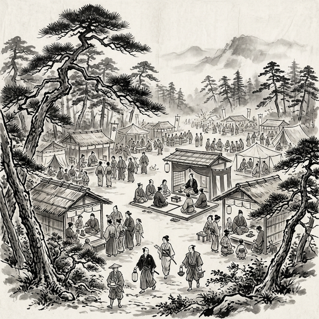
北野大茶湯の壮観
利休の名声は同時代から高く、 数多くの称賛の逸話が伝えられている。 その多くは後世の脚色を免れないが、 利休の人物像を伝える貴重な物語として今に残っている。
朝顔の茶会
利休の庭に見事な朝顔が咲いていると聞きつけた秀吉が、 利休の茶室を訪れた。しかし庭に入ると、 朝顔はすべて摘み取られていた。 いぶかしく思いながら茶室に入ると、 床の間の花入れに朝顔がただ一輪、凛と活けられていた。 無数の花よりも、一輪の花にこそ命の輝きがある── この逸話は、利休の美意識の精髄を物語るものとして、 最も有名な茶の湯の伝説の一つとなっている。
天下の茶頭
利休は織田信長に茶頭として仕え、 信長の死後は豊臣秀吉の茶頭となった。 「天下三宗匠」（利休・今井宗久・津田宗及）の筆頭として、 茶の湯の世界に君臨した利休は、 やがて三宗匠の中でも別格の存在となっていく。 秀吉は利休を「天下一の茶の湯者」と称し、 その才能に深い敬意を示していた。
北野大茶湯
天正十五年（一五八七年）に開催された北野大茶湯は、 利休の名声が頂点に達した象徴的な出来事であった。 秀吉が主催し、利休が采配を振るった この大茶会は、 身分の貴賤を問わず誰でも参加できるという 前代未聞の催しであった。 全国から茶人が集まり、千を超える茶席が設けられたという。 茶の湯を民衆に開放するというこの革新的な試みは、 利休の「茶の平等」の精神が具現化されたものであった。
弟子たちからの敬慕
利休の弟子たちは、師に対して深い敬愛の念を抱いていた。 「利休七哲」と呼ばれる七人の高弟 ──蒲生氏郷、細川忠興（三斎）、古田織部、芝山監物、 瀬田掃部、高山右近、牧村利貞──はいずれも 大名でありながら、利休の教えに心酔していた。 特に細川三斎は、利休の切腹の際に 師を大坂から船で堺まで送り届けたとされ、 その師弟の絆の深さが偲ばれる。
美を見出す眼
利休は、他の誰もが見過ごすようなものの中に 美を発見する天才でもあった。 魚屋の桶を花入れに転用し、 農民が使う竹筒を茶杓の素材にした。 高価な唐物に頼らず、身近なものの中に 無限の美を見出す利休の眼は、 茶の湯の可能性を飛躍的に広げた。 そしてこの精神は、現代のデザインや美術にも 大きな影響を与え続けている。
黒いうわさ
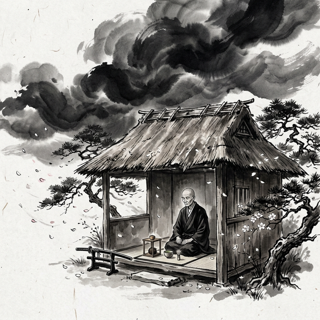
暗雲迫る ─ 利休最期の時
光が強ければ、影もまた濃い。 千利休ほどの人物であれば、 その周囲には称賛と同様に、暗い噂や疑惑も渦巻いていた。 四百年以上を経た今日でも、 利休の「黒い」側面をめぐる議論は尽きることがない。
茶道具の暴利
利休に対する最も根強い批判の一つが、 茶道具の売買における不正な利益の追求である。 利休は「目利き」として絶大な権威を持っていたため、 利休が良いと認めた道具は途端に価値が跳ね上がった。 この権威を利用して、安価に仕入れた道具に 法外な値をつけて売りさばいたという噂がある。
特に、大名や豪商に対する茶道具の斡旋においては、 利休の「鑑定」という名の価格操作が行われていた 可能性が指摘されている。 茶道具が政治的な贈答品や褒賞として用いられた時代にあって、 その価値を左右できる利休の立場は、 経済的に見れば巨大な利権そのものであった。
大徳寺山門事件
利休切腹の直接的な原因とされるのが、 大徳寺山門（金毛閣）事件である。 利休は大徳寺の山門の修復に私財を投じ、 その見返りとして山門の上層に 自らの木像を安置させた。 秀吉が山門をくぐる際に、 利休の木像の足の下をくぐることになる── これが秀吉の逆鱗に触れたとされる。
しかし、この事件が切腹の真の理由であったかどうかは疑わしい。 木像の安置は以前から知られており、 なぜこの時期に突然問題化したのかは不明である。 むしろ、利休を排除したい勢力がこの件を 口実として利用したと見る向きが強い。
秀吉との確執
利休と秀吉の関係は、盟友から敵対へと変化していった。 秀吉は天下統一を果たすにつれて、 華美と権力の誇示に傾いていった。 一方の利休は、あくまで侘びの精神を貫こうとした。 黄金の茶室と二畳の草庵── この対照は、両者の美意識の根本的な対立を象徴している。
利休が嫁に出した娘を秀吉の側室として差し出すことを拒んだ、 という説もある。権力者への屈服を拒む利休の態度が、 秀吉の怒りを買ったというのである。 しかしこの説についても確たる史料は存在せず、 後世の創作である可能性が高い。
政治への過度な介入
利休は茶頭として政治的にも大きな影響力を持っていた。 茶室は密談の場としても機能しており、 利休はその場を通じて政治的な仲介や情報収集を 行っていたとされる。 利休の政治的影響力が肥大化し、 「茶」の範囲を超えて政治に深く介入するようになったことが、 秀吉との軋轢を生んだという見方がある。
特に、秀吉の朝鮮出兵（文禄の役）をめぐって 利休が反対の立場を取ったとする説もあるが、 これについても確証はない。 しかし、茶頭という立場を超えた利休の政治的存在感が、 秀吉政権内部の権力闘争の中で 標的にされたことは十分に考えられる。
切腹の謎
天正十九年（一五九一年）二月二十八日、 千利休は秀吉の命により切腹して果てた。享年七十。 その死の真相は今なお明らかではない。 大徳寺山門事件、茶道具の不正取引、政治的対立、 個人的な軋轢──様々な要因が複合的に絡み合い、 結果として茶聖は最期を迎えることになった。
利休の首は一条戻橋に晒されたとされるが、 この仕打ちの過酷さは、利休の「罪」が 単なる礼式の問題ではなかったことを示唆している。 秀吉にとって利休は、もはや看過できない 存在になっていたのである。 権力と美、政治と文化の相克── 利休の最期は、その永遠のテーマを 最も悲劇的な形で体現している。
利休の遺したもの
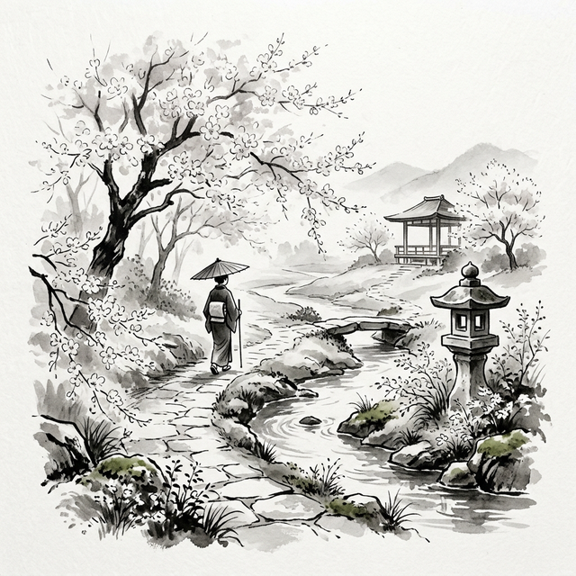
永遠の庭 ─ 利休の遺した風景
千利休がこの世を去ってから四百三十年以上が過ぎた。 しかし、利休の精神は今なお日本文化の深層に息づいている。 いや、日本のみならず、世界の美意識や哲学にまで その影響は広がりつつある。
三千家の継承
利休の死後、千家は一時断絶の危機に瀕したが、 孫の千宗旦によって復興された。 宗旦の三人の息子によって、 表千家（不審菴）、裏千家（今日庵）、 武者小路千家（官休庵）の三千家が成立し、 今日まで利休の茶の湯を脈々と伝えている。 現在、茶道の稽古人口は数百万人にのぼり、 利休の教えは生きた伝統として受け継がれている。
日本文化への浸透
利休の影響は茶道の枠を遥かに超えている。 日本庭園の美意識、陶芸における不完全の美、 建築における「引き算の美学」、 花道における自然との調和── 日本文化のあらゆる領域に、利休の精神が浸透している。
「侘び・寂び」という概念は、 今や世界の美術・デザイン用語として認知されつつある。 現代のミニマリズム、サステナビリティ、 マインドフルネスの潮流の中で、 利休の思想は新たな光を帯びて注目されている。 少ないもので豊かに生きる、 不完全を受け入れる、今この瞬間に集中する── これらの価値観は、利休が四百年前に茶室で実践していたことに他ならない。
永遠の問い
利休が我々に遺した最大の財産は、 おそらく「問い」そのものであろう。 美とは何か。人と人の真の出会いとは何か。 簡素さの中にある豊かさとは何か。 生と死の意味とは何か。
これらの問いに、利休は明確な答えを与えなかった。 ただ一服の茶を点て、それを差し出しただけである。 しかし、その一服の茶の中に、 利休は問いに対するすべての答えを込めていた。
茶の湯とは
ただ湯を沸かし
茶を点てて
飲むばかりなる事と
知るべし
─ 千利休
この簡素な言葉の中に、利休の全宇宙がある。 そして我々は、その宇宙の深さを、 これからも探り続けることになるだろう。
奥 付
- 書名
- 千利休 ─ 侘びの極致を求めた茶聖
- 副題
- その生涯、思想、そして光と影
- 挿画
- 墨汁画（Nanobanana Pro 2 使用）
- 発行日
- 令和八年三月三日
- 形式
- 電子書籍（ウェブブック）
本書は千利休に関する歴史的事実と伝承を元に構成した読み物です。
挿絵はすべて墨汁画風に制作されたものです。